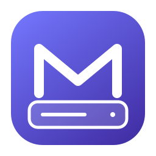

Большой WIM?
Есть два пути.
FAT32 с разбиением WIM в SWM или NTFS с отдельным EFI-разделом UEFI:NTFS. Для BIOS/CSM — NTFS, MBR и загрузчик BOOTMGR.

mafusРелиз 0.1.0 ↗СДЕЛАНО ДЛЯ MAC
Windows, Linux и DOS — на одном накопителе за раз. Нативный интерфейс, открытый код и инструменты, которые уже входят в приложение.
Apple Silicon · macOS 14+ · GPL-3.0-or-later
ОБРАЗ СИСТЕМЫ
USB-НАКОПИТЕЛЬ
Данные на выбранном USB будут стёрты
Интерактивная иллюстрация интерфейса.
Запись выполняется только приложением на Mac.
ОДИН ИНСТРУМЕНТ. РАЗНЫЕ СИСТЕМЫ.
ОБРАЗ ЕЩЁ НЕ СКАЧАН?
Официальная страница Microsoft для Windows 11. Каталог Linux с выбором x64 или ARM64. Скачанный образ автоматически выбран для записи.
Как работает каталог ↗16 профилей x64 · 8 ARM64
SHA-256 сверяется при наличии опубликованной суммы.
ТРИ ШАГА ДО ЗАПИСИ
Локальный ISO/IMG или встроенный каталог. Поддерживаются сжатые образы и ZIP с одним образом.
Приложение показывает внешние USB и сверяет идентификатор подключения перед операцией.
Подтвердите стирание. Следите за прогрессом; по умолчанию включена проверка записанных данных.
ПЕРЕД ПЕРВЫМ ЗАПУСКОМ
Это первый экспериментальный релиз. Файловые тесты подтверждают подготовку образов; они не заменяют проверку USB и установки ОС на вашем оборудовании.
Пакет для Apple Silicon, macOS 14+. Liquid Glass — на macOS 26+. Архитектуру ISO выбирайте для целевого компьютера.
Релиз подписан локально и не прошёл notarization. Developer ID пока нет. Не отключайте Gatekeeper целиком; исходники и инструкция сборки открыты.
UEFI:NTFS, Windows BIOS/CSM и persistence требуют логических секторов 512 байт. ARM64 Windows работает только с UEFI. Secure Boot зависит от прошивки и отзыва сертификатов. Persistence поддерживает указанные Live ISO, а не произвольный дистрибутив.
Windows To Go и генератор MS-DOS не реализованы. MS-DOS записывается из вашего загрузочного IMG; системных файлов Microsoft в Mafus нет. Полная таблица совместимости ↗
Перед записью сохраните нужные данные с USB.